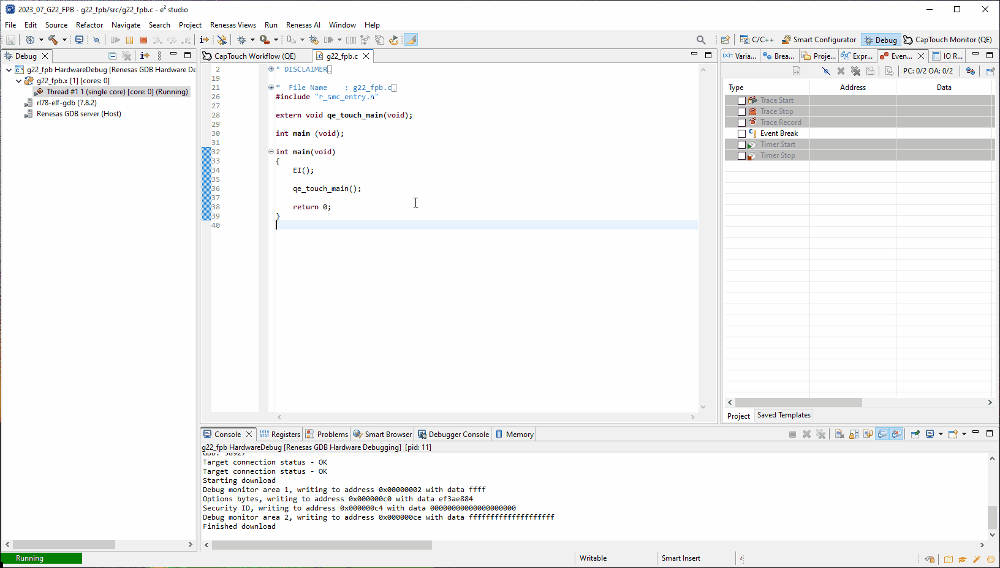

Here we will guide you through debugging this labs project and will provide details on how to verify the working of the project.
5.1 Re-build the project
Now we have tuned and configured our project we will need to re-build it.
To build the project please [Right-Click] the project and click Build Project.
5.2 Debugging the project
Now relaunch the debug session to re-load the binary.
To start a debug session please select the project by clicking on it and click the debug icon along the
menu bar.

Finally Click the run icon, first it will run to main, click the run icon again and the project will start running.

5.3 Start Monitoring (Serial)
Now onto the second major function of the QE tools.
The monitoring function allows us to configure the middleware in many ways - the following steps will
show
us a plethora of those ways.
First Navigate back to the CapTouch Workflow, either by the tab or using the
Renesas Views → Renesas QE → CapTouch Workflow (QE)
method outlined earlier.
5.4 Enable Monitoring
Then navigate back to Start Tuning (Serial) within 4.Monitoring in the cap touch workflow, set the COM port to the COM port connected with the FTDI cable and click Connect then scroll down and click Show Views.
Now perform the following (you may need to expand the windows as shown in the .gif):
- In the CapTouch Board Monitor (QE) use the dropdown to select Button00
- In the CapTouch Board Monitor (QE) view select Enable Monitoring
5.5 Change the threshold
Now we are going to change the threshold, the threshold is the value it which indicates a touch.
- [Threshold + hystersis] is the point at which a "touch" is detected
- [Threshold - hystersis] is the point at which a "no-touch" is detected
This is where fine tuning the sensitivity distance in a proximity application occurs.
Or when tuning touch pressure occurs in a touch application.
To change this value, do the following:
- Navigate to Threshold in the CapTouch Parameters (QE) view
- Reduce the Threshold value by approximately a third (i.e., 500 becomes 350)
- Click the Write value to the target board button
- Notice how in the CapTouch Status Chart (QE) view the threshold (green line) reduces
- Now approach the board with your hand and notice how the sensing distance has increased
5.6 Change the positive noise filter cycle counts
Now we are going to change the positive noise filter cycle count value.
This value represents the number of consecutive touches before propagating a touch event.
The negative cycle count is the opposite i.e., the number of consecutive no-touches before propagating a no-touch event.
This is where fine tuning the filters starts.
To change this value, do the following:
- Navigate to Positive Noise Filter Cycle value in the CapTouch Parameters (QE) view
- Change the Positive Noise Filter Cycle value to 100
- Click the Write value to the target board button
- Before apporaching the board with our hand ensure the CapTouch Board Monitor (QE) view is showing Button 00
- Now approach the board with your hand and notice how the touch event does not occur immediatley
- Note: the touch event can be seen as a hand on top of Button00 in the CapTouch Board Monitor (QE) view
- Change the Positive Noise Filter Cycle value to 3
- Click the Write value to the target board button
- Note: this is just to reset the value so we can evaluate the other parameters in later steps.
5.7 Change the drift correction
To understand the drift correction value one must understand the reference value.
The reference value is the baseline value or the resting value with minimal external
disturbance - i.e., the svalue when the system is in idle state.
The threshold applies to this value - so if your reference value is 1500 counts
and your threshold value is 500 counts, then your threshold lies at 1500 + 500 = 2000 counts.
Now the reference value may be subject to change due to many external factors such as temperature or humidity.
Therefore the middleware provides a mechanism, that after a settabel number of counts, the reference value is
updated according to the latest value measured under no-touch conditions. Thus
providing envirnmental compensation.
To see this in action, please perform the following:
- Navigate to Drift Correction in the CapTouch Parameters (QE) view
- Change the Drift Correction value to 25
- Click the Write value to the target board button
- Now slowly approach the board with your hand and notice how the reference value (blue line) and threshold value (green line) move to accomodate this
- Change the Drift Correction value back to 255
- Click the Write value to the target board button
- Note: this is just to reset the value so we can evaluate the other parameters in later steps.
5.8 Change the long touch cancel
The long touch cancel value is how many consecutive touches are detected before cancelling the touch event.
On cancelling the touch event the reference value is immediately shifted up to the count value measured when long
touch cancel is triggered.
To see this in action, please perform the following:
- Navigate to Long Touch Cancel Cycle in the CapTouch Parameters (QE) view
- Change the Long Touch Cancel Cycle value to 100
- Click the Write value to the target board button
- Now approach the board with your hand to engage a touch and keep your hand still
- Keep your hand there and notice how the touch is eventually stopped detection and the reference value (blue line) shifts up
- Change the Long Touch Cancel Cycle value back to 0
- Click the Write value to the target board button
5.9 Output parameters file
Now simply click the Output Parameter Files button in the CapTouch Parameters (QE) view.
This saves the current set of parameters to the file [Project] → qe_gen → qe_touch_config.c.
5.10 Summary
In this lab you have gone through the process for creating a capacitive touch application from
scratch.
The principles outlined here abstracted from hardware can be used on any RL78G2x based device.